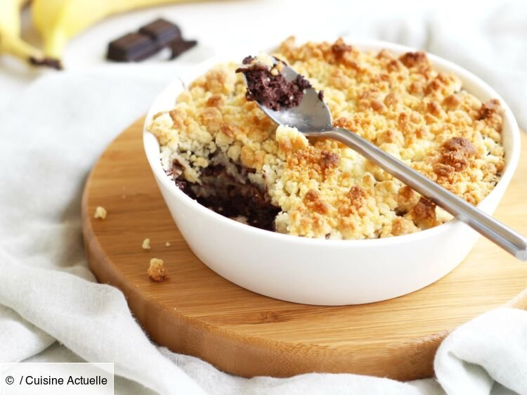

Crumble banane chocolat
Ingredients
4×
- 125 g de beurre
- 150 g de sucre
- 125 g de farine
- 200 g de poudre d'amande
- 4 bananes
- 125 g de pépites de chocolat

Préparation
Étape 1
Ramollir 125 g de beurre au micro-ondes, le couper en morceaux et le mélanger avec 150 g de sucre, 125 g de farine et 200 g de poudre d'amande jusqu’à obtenir un mélange homogène.
Étape 2
Couper en rondelles 4 bananes et les disposer au fond d’un plat. Parsemer de 125 g de pépites de chocolat puis émietter la pâte par-dessus.
Étape 3
Cuire 35min à 180ºC.